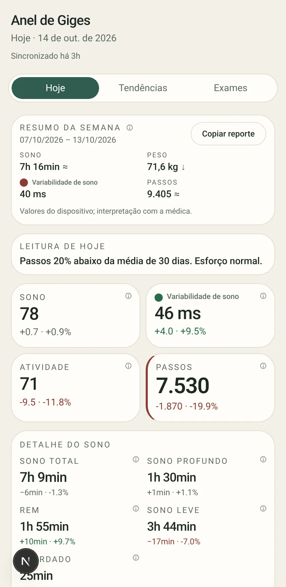
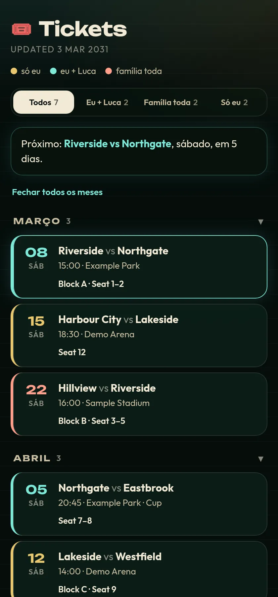
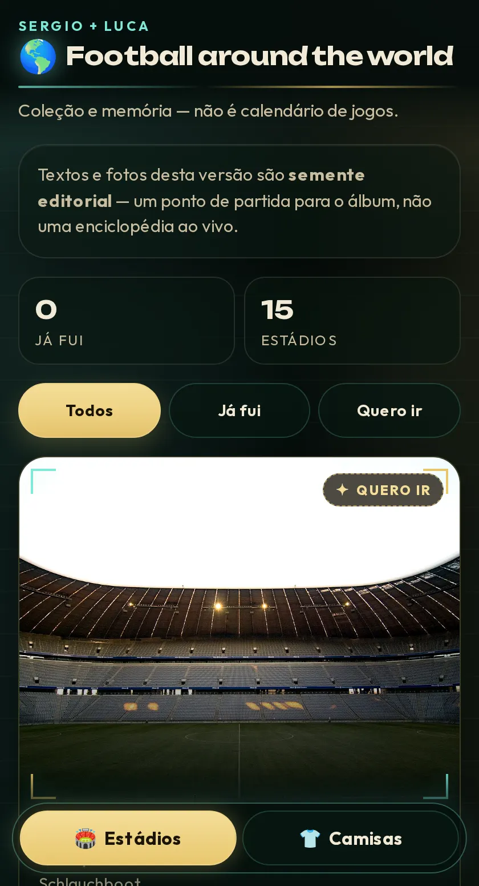

Sergio Ambrozio
Technology Leader | Applied AI in Production
Basel 🇨🇭
WorkTrabalho
I lead digital, AI, and data strategy for Syngenta Group's $14B Crop Protection Marketing division and IT for the $600M Japan & ANZ region. Agentic AI we put in production cut planning effort from 48,000 to 4,000 hours ($4.4M saved). Nearly 20 years across Mars, Nestlé, and Syngenta. Lidero a estratégia digital, de IA e de dados da divisão Crop Protection Marketing da Syngenta Group ($14B) e a TI da região Japan & ANZ ($600M). A IA agêntica que colocamos em produção reduziu o esforço de planejamento de 48.000 para 4.000 horas ($4,4M economizados). Quase 20 anos entre Mars, Nestlé e Syngenta.
Head of IT & Digital – CP Marketing, Japan & ANZ, Syngenta Group Aug 2024 – Presentago 2024 – Presente
Things I've builtCoisas que construí

Anel de Giges PrivatePrivado
Oura ring and smart-scale data pipeline, with an AI agent as the interface that sends me a daily health digest in chat. Next.js, Supabase, Vercel.Pipeline de dados do anel Oura e da balança inteligente, com um agente de IA como interface que me manda um resumo diário de saúde no chat. Next.js, Supabase, Vercel.

Tickets PrivatePrivado
Football tickets tracker for matches with my son and family, auto-updated by an AI agent when I buy a ticket, filtered by who's going.Controle de ingressos de futebol para jogos com meu filho e a família, atualizado por um agente de IA quando compro um ingresso, com filtro por quem vai.

Stadium and shirt album built with my son.Álbum de estádios e camisas, feito com meu filho.
EducationFormação
- MIT Sloan & McKinsey – Business Transformation in the Age of AI – Top 200 Leaders (2024–25)
- ETH Zürich – CAS AI & Software Engineering (2024)
- USP ESALQ – MBA Agribusiness (2024)
- FHNW – BSc & MSc Management (2014–2020)
Talks & publicationsPalestras e publicações
- “Navigating Uncertainty: Isomorphic Pressures in Cloud Computing Adoption,” The Palgrave Handbook of Breakthrough Technologies in Contemporary Organisations (Springer, 2025), with J. P. Lindeque and M. K. Petercom J. P. Lindeque e M. K. Peter
- Moderator, 12th Richmond IT Forum, Interlaken (March 24–25, 2026): “The 95% Failure Rate: Are Swiss AI Projects Stuck in Pilot Purgatory?”Moderador, 12º Richmond IT Forum, Interlaken (24–25 de março de 2026): “The 95% Failure Rate: Are Swiss AI Projects Stuck in Pilot Purgatory?”
- Guest Lecturer, FHNW – Digital TransformationProfessor convidado, FHNW – Transformação Digital